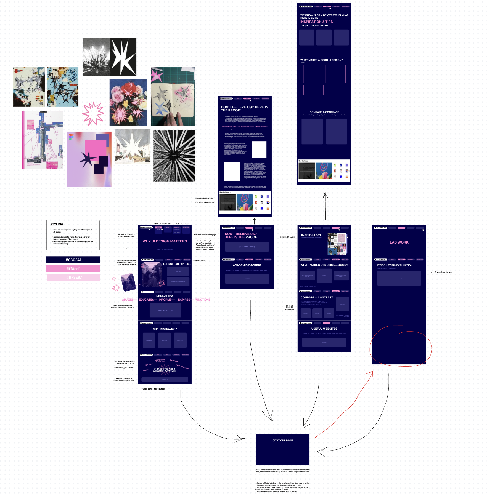

This project explores the importance of UI design through a multimedia website aimed at young professionals in their 20s. The site is both informative and artistically driven, using design as a storytelling tool. It demonstrates how effective UI can enhance communication, usability, and first impressions - all key to personal branding and professional success, as well as being an important soft skill. Designed with the user experience in mind, the site blends bold, clean visuals with variations in alignment and interactive elements to keep users engaged. Linking to scholarly research, real-life examples, and design theory, this project communicates why thoughtful UI isn’t just aesthetic - its essential.
The aims of effective project management is to break the larger project down into smaller manageable steps. We did so with the help of our peer groups. Working collaboratively ensures my design is not just based on personal preference but tested by real users and peers. The supportive and constructive environment also helps maintain motivation and well-being during the project development process.
After deliberation and discussion with my group, its clear this updated design includes added navigation and space for greater content to be showcased. The layout of the wireframe also feels more sensical as each button will take you to a seperate scrollable page, organized by content category - About/general info, academic backing/proof, inspiration, and finally the process work when building the page.
Ability to visualize the layout and structure of my site early on, without needing to code everything from the start. It gives a clear sense of the user journey, helping me focus on functionality and hierarchy before aesthetics.
The feedback I received during testing made me rethink some elements of my design. For example, some users found the original navigation too subtle and didn’t realize there were multiple scrollable sections. As a result, I’ve decided to make the navigation bar more visible and interactive, possibly adding hover states or audio cues. I also got suggestions to simplify some components to avoid overwhelming users with too much information at once, which led me to rework the visual hierarchy and reduce the number of items shown on the homepage.
I plan to conduct a second round of user testing once the updated wireframes are done. This time, I’ll create an interactive prototype using a tool like Canva, allowing users to click through the site as they would in a real experience. I’ll ask them to complete simple tasks (e.g., “Find the UI advice for beginners”) and observe where they hesitate or get confused. I’ll collect feedback through a short survey and a follow-up discussion, which will inform the final design adjustments before full development.
Rheinfrank, J. (1995). The Importance of Designing Usable Systems. Interactions, 2(1), pp. 36–39. [online] Available at: https://dl.acm.org/doi/10.1145/208143.208152 [Accessed 21 Apr. 2025].
Introduction video - Made on Canva
Alamy (n.d.) Laptop fully opened, partially opened and closed screen. [online image] Available at: https://c8.alamy.com/comp/2BN231E/laptop-fully-opened-partially-opened-and-closed-screen-2BN231E.jpg [Accessed 20 Apr. 2025].
What is UI design?
Figma. (n.d.) What is UI design?. [online] Available at: https://www.figma.com/resource-library/what-is-ui-design/ [Accessed 15 Apr. 2025].
Springboard. (n.d.) 77 Shareable UX Design Quotes. [online] Available at: https://www.springboard.com/blog/design/shareable-ux-design-quotes/ [Accessed 18 Apr. 2025].
Jony Ive
Encyclopædia Britannica. (n.d.) Jony Ive. [online] Available at: https://www.britannica.com/biography/Jony-Ive [Accessed 17 Apr. 2025].
Knowledge Everywhere. (n.d.) Designing Success: Jony Ive's Management Wisdom. [online] Medium. Available at: https://medium.com/@bpminds/designing-success-jony-ives-management-wisdom-8ebc82c4ec4b [Accessed 17 Apr. 2025].
Jakob Nielson
Nielsen Norman Group. (n.d.) Jakob Nielsen. [online] Available at: https://www.nngroup.com/people/jakob-nielsen/ [Accessed 17 Apr. 2025].
Academic articles
Nielsen, J. (1999). Designing Web Usability: The Practice of Simplicity. New Riders Publishing. Available at: https://www.nngroup.com/books/designing-web-usability/ [Accessed 21 Apr. 2025].
Association for Computing Machinery (ACM). (2023–present). Games: Research and Practice. [online] Available at: https://dl.acm.org/journal/games [Accessed 21 Apr. 2025].
Mullet, K. and Sano, D. (1995). Designing Visual Interfaces: Communication Oriented Techniques. SunSoft Press. Available at: https://archive.org/details/designingvisuali00mull [Accessed 21 Apr. 2025].
Zhang, Y., Li, H., and Wang, X. (2024). 'From Classic to Future: The Temporal Evolution of GUI Design for Apple Products'. In: Human-Computer Interaction – INTERACT 2023. Lecture Notes in Computer Science, vol 14142. Springer, Cham. Available at: https://link.springer.com/chapter/10.1007/978-3-031-60012-8_25 [Accessed 21 Apr. 2025].
shapes video - made on Canva, usese hand-drawn or free Canva images
What makes a good UI design?
Figma. (n.d.) What is UI design?. [online] Available at: https://www.figma.com/resource-library/what-is-ui-design/ [Accessed 18 Apr. 2025].
World Wide Web Consortium (W3C). (n.d.) Web Content Accessibility Guidelines (WCAG) Overview. [online] Available at: https://www.w3.org/WAI/standards-guidelines/wcag/ [Accessed 18 Apr. 2025].
Compare & Contrast
Resume examples - made on Canva
Useful resources
Awwwards. (n.d.) Freelance Portfolio – Awwwards Collection. [online] Available at: https://www.awwwards.com/awwwards/collections/freelance-portfolio/ [Accessed 19 Apr. 2025].
Dribbble. (n.d.) UI Design – Tagged Shots. [online] Available at: https://dribbble.com/tags/ui-design# [Accessed 20 Apr. 2025].
Pinterest. (n.d.) UI Design Inspiration Board. [online] Available at: https://pin.it/bNzaSw5Al [Accessed 15 Apr. 2025].
Apple Developer. (n.d.) Design Tips: Dos and Don’ts. [online] Available at: https://developer.apple.com/design/tips/ [Accessed 19 Apr. 2025].
Figma. (n.d.) Design Basics. [online] Available at: https://www.figma.com/resource-library/design-basics/ [Accessed 19 Apr. 2025].
Figma. (n.d.) Modern Fonts. [online] Available at: https://www.figma.com/resource-library/modern-fonts/ [Accessed 21 Apr. 2025].
Figma. (n.d.) What is a Style Guide?. [online] Available at: https://www.figma.com/resource-library/what-is-a-style-guide/ [Accessed 21 Apr. 2025].
Canva. (n.d.) Visual Suite for Everyone. [online] Available at: https://www.canva.com/ [Accessed 21 Apr. 2025].